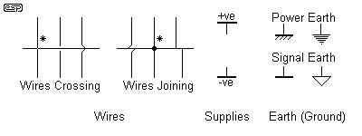
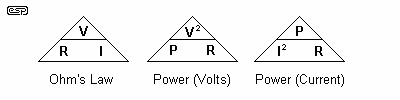
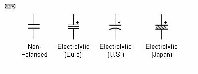
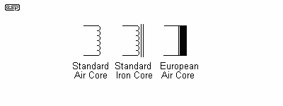
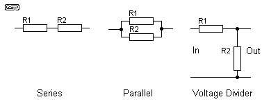
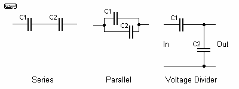
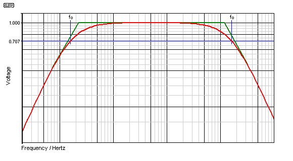
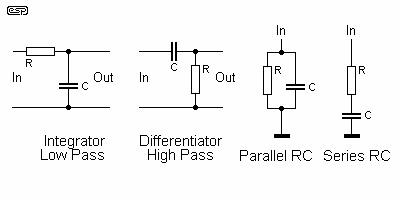
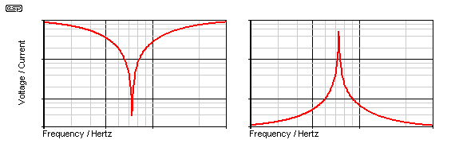

|
|
| Elliott Sound Products | Horologers' Guide to Electronics |
This article is a condensed version of the article "Electronics - Part 1" available on the main ESP website. A great deal of material has been culled, leaving only the essentials needed for a basic understanding of electronics in horology. There are also some new sections, that are specifically to discuss the rather different applications of basic components for clock motors.
 Main Index
Main IndexElectrical timepieces have now been around for about 100 years. While the early systems were largely mechanical and used battery power to activate more or less traditional movements, their electrical operation is not well understood by most clock enthusiasts. The mechanics usually cause little or no pain, but deciphering the circuit diagram (schematic) can cause much tearing of hair and vocabulary enrichment.
Understanding exactly what happens and why can cause further aguish - especially when it appears that everything seems fine, but the clock won't run. This is exacerbated once electronic systems are encountered. These became popular after the transistor was invented (in 1948), and by the early 50s there were quite a few electronic clocks available. These are now quite collectable, and some will be extremely rare in a few years - especially those using early plastic materials in their manufacture. The plastics are usually in the process of disintegration after 50 years or so, and restoration is either difficult or impossible.
In keeping with the ESP philosophy, I will concentrate here on the information you need, as opposed to what you are told you need. These are usually very different.
Basic components are not always as simple as they may appear at first look. This article is intended for the beginner to electronics, who will need to know a number of things before starting on even the simplest of projects. The more experienced hobbyist will probably learn some new things as well, since there is a good deal of information here of which non-professionals will be unaware.
This is by no means an exhaustive list, and I shall attempt to keep a reasonable balance between full explanations and simplicity. I shall also introduce some new terminology as I go along, and it is important to read this the way it was written, or you will miss the explanation of each term as it is first encountered.
It must be noted that the US still retains some very antiquated terminology, and this often causes great confusion for the beginner (and sometimes the not-so-beginner as well). You will see some "beat-ups" of the US - citizens of same, please don't be offended, but rather complain bitterly to anyone you see using the old terminology.
Within The Audio Pages, I use predominantly European symbols and terminology - these are also the recommended (but not mandatory) symbols and terms for Australia, and I have been using them for so long that I won't be changing them.
The basic electrical units and definitions are as shown below. This list is not exhaustive (also see the Glossary), but covers the terms you will encounter most of the time. Many of the terms are somewhat inter-related, so you need to read all of them to make sure that you understand the relationship between them.
| Passive: | Capable of operating without an external power source. Typical passive components are resistors, capacitors, inductors and diodes (although the latter are a special case). |
| Active: | Requiring a source of power to operate. Includes transistors (all types), integrated circuits (all types), TRIACs, SCRs, LEDs, etc. |
| DC: | Direct Current The electrons flow in one direction only. Current flow is from negative to positive, although it is often more convenient to think of it as from positive to negative. This is sometimes referred to as "conventional" current as opposed to electron flow. |
| AC: | Alternating Current The electrons flow in both directions in a cyclic manner - first one way, then the other. The rate of change of direction determines the frequency, measured in Hertz (cycles per second). |
| Frequency: | Unit is Hertz, Symbol is Hz, old symbol was cps (cycles per second) A complete cycle is completed when the AC signal has gone from zero volts to one extreme, back through zero volts to the opposite extreme, and returned to zero. The accepted audio range is from 20Hz to 20,000Hz. The number of times the signal completes a complete cycle in one second is the frequency. |
| Voltage: | Unit is Volts, Symbol is V or U, old symbol was E Voltage is the "pressure" of electricity, or "electromotive force" (hence the old term E). A 9V battery has a voltage of 9V DC, and may be positive or negative depending on the terminal that is used as the reference. The mains has a voltage of 220, 240 or 110V depending where you live - this is AC, and alternates between positive and negative values. Voltage is also commonly measured in millivolts (mV), and 1,000 mV is 1V. Microvolts (uV) and nanovolts (nV) are also used. |
| Current: | Unit is Amperes (Amps), Symbol is I Current is the flow of electricity (electrons). No current flows between the terminals of a battery or other voltage supply unless a load is connected. The magnitude of the current is determined by the available voltage, and the resistance (or impedance) of the load and the power source. Current can be AC or DC, positive or negative, depending upon the reference. For electronics, current may also be measured in mA (milliamps) - 1,000 mA is 1A. Nanoamps (nA) are also used in some cases. |
| Resistance: | Unit is Ohms, Symbol is R or Ω Resistance is a measure of how easily (or with what difficulty) electrons will flow through the device. Copper wire has a very low resistance, so a small voltage will allow a large current to flow. Likewise, the plastic insulation has a very high resistance, and prevents current from flowing from one wire to those adjacent. Resistors have a defined resistance, so the current can be calculated for any voltage. Resistance in passive devices is always positive (i.e. > 0) |
| Capacitance: | Unit is Farads, Symbol is C Capacitance is a measure of stored charge. Unlike a battery, a capacitor stores a charge electrostatically rather than chemically, and reacts quite differently. A capacitor passes AC, but will not pass DC (at least for all practical purposes). The reactance or AC resistance (called impedance) of a capacitor depends on its value and the frequency of the AC signal. Capacitance is always a positive value. |
| Inductance: | Unit is Henrys, Symbol is H or L (depending on context) Inductance occurs in any piece of conducting material, but is wound into a coil to be useful. An inductor stores a charge magnetically, and presents a low impedance to DC (theoretically zero), and a higher impedance to AC dependent on the value of inductance and the frequency. In this respect it is the electrical opposite of a capacitor. Inductance is always a positive value. The symbol "Hy" is sometimes used in (guess where :-) ... the US. There is no such symbol. |
| Impedance: | Unit is Ohms, Symbol is Ω or Z Unlike resistance, impedance is a frequency dependent value, and is specified for AC signals. Impedance is made up of a combination of resistance, capacitance, and/ or inductance. In many cases, impedance and resistance are the same (a resistor for example). Impedance is most commonly positive (like resistance), but can be negative with some components or circuit arrangements. |
A few basic rules that electrical circuits always follow are useful before we start.
Some of these are intended to forewarn you against some of the outrageous claims you will find as you research these topics further, and others are simple electrical rules that apply whether we like it or not.

Figure 3.1 - Some Wiring Symbols
The conventions I use for wires crossing and joining are marked with a star (*) - the others are a small sample of those in common use, but are fairly representative. Many can be worked out from their position in the circuit diagram (schematic).
The commonly accepted units in electronics are metric. In accordance with the SI (System Internationale) metric specifications, any basic unit (such as an Ohm or Farad) will be graded or sub-graded in units of 1,000 - this gives the following table.
| Term | Abbreviation | Value (Scientific) | Value (Normal) |
| Tera | T | 1 x 1012 | 1,000,000,000,000 |
| Giga | G | 1 x 109 | 1,000,000,000 |
| Mega | M | 1 x 106 | 1,000,000 |
| kilo | k (lower case) | 1 x 103 | 1,000 |
| Units | - | 1 | 1 |
| Milli | m | 1 x 10-3 | 1 / 1,000 |
| Micro | μ or u | 1 x 10-6 | 1 / 1,000,000 |
| Nano | n | 1 x 10-9 | 1 / 1,000,000,000 |
| Pico | p | 1 x 10-12 | 1 / 1,000,000,000,000 |
The abbreviations and case are important - "m" is quite clearly different from "M". In general, values smaller than unity use lower case, and those greater than unity use upper case. "k" is clearly an exception to this. There are others that go above and below those shown, but it is unlikely you will encounter them. Even Giga and Tera are unusual in electronics (except for determining the size hard drive needed to install a Microsoft application :-)
The first and most common electronic component is the resistor. There is virtually no working circuit I know of that doesn't use them, and a small number of practical circuits can be built using nothing else. There are three main parameters for resistors, but only two of them are normally needed, especially for solid state electronics.
The resistance value is specified in ohms, the standard symbol is "R" or Ω. Resistor values are often stated as "k" (kilo, or times 1,000) or "M", (meg, or times 1,000,000) for convenience. There are a few conventions that are followed, and these can cause problems for the beginner. To explain - a resistor has a value of 2,200 Ohms. This may be shown as any of these ...
The use of the symbol for Ohms (Omega, Ω is optional, and is most commonly left off, since it is irksome to add from most keyboards. The letter "R" and the "2k2" conventions are European, and not commonly seen in the US and other backward countries :-) Other variants are 0R1, for example, which means 0.1 Ohm
The schematic symbols for resistors are either of those shown below. I use the Euro version of the symbol exclusively.
Figure 5.1 - Resistor Symbols
The basic formula for resistance is Ohm's law, which states that ...
1.1.1 R = V / I Where V is voltage, I is current, and R is resistance
The other formula you need with resistance is Power (P)
1.1.2 P = V2 / R
1.1.3 P = I2 * R
The easiest way to transpose any formula is what I call the "Transposition Triangle" - which can (and will) be applied to other formulae. The resistance and power forms are shown below - just cover the value you want, and the correct formula is shown. In case anyone ever wondered why they had to do algebra at school, now you know - it is primarily for the manipulation of a formula - they just don't teach the simple ways. A blank between two values means they are multiplied, and the line means divide.

Figure 5.2 - Transposition Triangles for Resistance
Needless to say, if the value you want is squared, then you need to take the square root to get the actual value. For example, you have a 100 Ohm, 5W resistor, and want to know the maximum voltage that can be applied. V2 = P * R = 500, and the square root of 500 is 22.36, or 22V. This is the maximum voltage across the resistor to remain within its power rating.
Resistors have the same value for AC and DC - they are not frequency dependent within the normal audio range. Even at radio frequencies, they will tend to provide the same value, but at very high frequencies other effects become influential. These characteristics will not be covered, as they are outside the scope of this article.
A useful thing to remember for a quick calculation is that 1V across a 1k resistor will have 1mA of current flow - therefore 10V across 1k will be 10mA (etc.).
There are a number of different standards, commonly known as E12, E24, E48 and E96, meaning that there are 12, 24, 48 or 96 individual values per decade (e.g. from 1k to 10k). The most common, and quite adequate for 99.9% of all projects, are the E12 and E24 series, and I shall not bother with the others at this time. The E12 and E24 series follow these sequences:
| 1 | 1.2 | 1.5 | 1.8 | 2.2 | 2.7 | 3.3 | 3.9 | 4.7 | 5.6 | 6.8 | 8.2 | 10 |
| 1 | 1.2 | 1.5 | 1.8 | 2.2 | 2.7 | 3.3 | 3.9 | 4.7 | 5.6 | 6.8 | 8.2 | 10 | ||||||||||||
| 1.1 | 1.3 | 1.6 | 2.0 | 2.4 | 3.0 | 3.6 | 4.3 | 5.1 | 6.2 | 7.5 | 9.1 |
Generally, 5% resistors will follow the E12 sequence, and 1% or 2% resistors will be available in the E24 sequence. Wherever possible in my projects, I use E12 as these are commonly available almost everywhere.
Resistors are commonly available in values ranging from 0.1 Ohm (0R1) up to 10M Ohms (10,000,000 Ohms). Not all values are available in all types, and close tolerances are uncommon in very high and very low values.
5.2 Colour Codes
Low power (<= 2W) resistors are nearly always marked using the standard colour code. This comes in two variants - 4 band and 5 band. The 4 band code is most common with 5% and 10% tolerance, and the 5 band code is used with 1% and better.
| Colour | First Digit | Second Digit | Third Digit | Multiplier | Tolerance |
| Black | 0 | 0 | 0 | 1 | |
| Brown | 1 | 1 | 1 | 10 | 1% |
| Red | 2 | 2 | 2 | 100 | 2% |
| Orange | 3 | 3 | 3 | 1,000 | |
| Yellow | 4 | 4 | 4 | 10,000 | |
| Green | 5 | 5 | 5 | 100,000 | |
| Blue | 6 | 6 | 6 | 1,000,000 | |
| Violet | 7 | 7 | 7 | ||
| Grey | 8 | 8 | 8 | ||
| White | 9 | 9 | 9 | ||
| Gold | 0.1 | 5% | |||
| Silver | 0.01 | 10% |
My apologies if the colours look wrong - blame the originators of the HTML colours, which are a little restricting, to say the least. With the 4 band code, the third digit column is not used, it is only used with the 5 band code. This is somewhat confusing, but we are unable to change it, so get used to it. Personally, I suggest the use of a multimeter when sorting resistors - I know it's cheating, but at least you don't get caught out by incorrectly marked components (and yes, this does happen).
5.3 Tolerance
The tolerance of resistors is mostly 1%, 2%, 5% and 10%. In the old days, 20% was also common, but these are now rare. Even 10% resistors are hard to get except in extremely high or low values (> 1M or < 1R), where they may be the only options available at a sensible price.
A 100R resistor with 5% tolerance may be anywhere between 95 and 105 ohms - in most circuits this is insignificant, but there will be occasions where very close tolerance is needed (e.g. 0.1% or better). This is fairly rare for audio, but there are a few instances where you may see such close tolerance components.
5.4 Power Ratings
Resistors are available with power ratings of 1/8th W (or less for surface mount devices), up to hundreds of watts. The most common are 1/4W (0.25W), 1/2W (0.5W), 1W, 5W and 10W. Very few projects require higher powers, and it is often much cheaper to use multiple 10W resistors than a single (say) 50W unit. They will also be very much easier to obtain.
Like all components, it is preferable to keep temperatures as low as possible, so no resistor should be operated at its full power rating for any extended time. I recommend a maximum of 0.5 of the power rating wherever possible. Wirewound resistors can tolerate severe overloads for a short period, but I prefer to keep the absolute maximum to somewhat less than 250% - even for very brief periods, since they may become open circuit from the stress, rather than temperature (this does happen, and I have experienced it during tests and repairs).
5.5 Resistance Materials
Resistors are made from a number of different materials. I shall only concentrate on the most common varieties, and the attributes I have described for each are typical - there will be variations from different makers, and specialised types that don't follow these (very) basic characteristics. All resistors are comparatively cheap.
A couple of points to ponder. Resistors make noise! Everything that is above 0K (zero Kelvin, absolute zero, or -273 degrees Celsius) makes noise, and resistors are no exception. Noise is proportional to temperature and voltage, but for horological applications it is unlikely that resistor noise will ever cause a problem.
Resistors may also have inductance, and wirewound types are the worst for this. Again, this is unlikely to cause any issues with clocks, regardless of the circuit type.
Capacitors come in a bewildering variety of different types. The specific type may be critical in some applications, where in others, you can use anything you please. Capacitors are the second most common passive component, and there are few circuits that do not use at least one capacitor.
A capacitor is essentially two conductive plates, separated by an insulator (the dielectric). To conserve space, the assembly is commonly rolled up, or consists of many small plates in parallel for each terminal, each separated from the other by a thin plastic film. See below for more detailed information on the different constructional methods. A capacitor also exists whenever there is more than zero components in a circuit - any two pieces of wire will have some degree of capacitance between them, as will tracks on a PCB, and adjacent components. Capacitance also exists in semiconductors (diodes, transistors), and is an inescapable part of electronics.
There are two main symbols for capacitors, and one other that is common in the US, but rarely seen elsewhere. Caps (as they are commonly called) come in two primary versions - polarised and non-polarised. Polarised capacitors must have DC present at all times, of the correct polarity and exceeding any AC that may be present on the DC polarising voltage. Reverse connection will result in the device failing, often in a spectacular fashion, and sometimes with the added excitement of flames, or high speed pieces of casing and electrolyte (an internal fluid in many polarised caps). This is not a good thing.

Figure 6.1 - Capacitor Symbols
Capacitors are rated in Farads, and the standard symbol is "C" or "F", depending upon the context. A Farad is so big that capacitors are most commonly rated in micro-Farads (uF). The Greek letter (lower case) Mu is the proper symbol, but "u" is available on keyboards, and is far more common. Because of the nature of capacitors, they are also rated in very much smaller units than the micro-Farad - the units used are ...
The items in bold are the ones I use in all articles and projects, and the others should be considered obsolete and not used - at all, by anyone !
Milli-Farads (mF) should be used for large values, but are generally avoided because of the US's continued use of the ancient terminology. When I say ancient, I mean it - these terms date back to the late 1920s or so. Any time you see the term "mF", it almost certainly means uF - especially if the source is the US. You may need to determine the correct value from its usage in the circuit.
A capacitor with a value of 100nF may also be written as 0.1uF (especially in the US). A capacitor marked on a schematic as 2n2 has a value of 2.2nF, or 0.0022uF. It may also be written (or marked) as 2,200pF. These are all equivalent, and although this may appear confusing (it is), it is important to understand the different terms that are applied.
A capacitor has an infinite (theoretically!) resistance at DC, and with AC, it has an impedance. Impedance is defined as a non-resistive (or only partially resistive) load, and is frequency dependent. This is a very useful characteristic, and is used to advantage in many circuits.
In the case of a capacitor, the impedance is called Capacitive Reactance generally shown as Xc. The formula for calculating capacitive reactance (Xc) is shown below ...
6.1.1 Xc = 1 / 2 π F C where π is 3.14159..., F is frequency in Hertz, and C is capacitance in Farads
The Transposition Triangle can be used here as well, and simplifies the extraction of the wanted value considerably.
Figure 6.2 - Capacitance Triangle
As an example, what is the formula for finding the frequency where a 10uF capacitor has a reactance of 200 Ohms? Simply cover the term "F" (frequency), and the formula is ...
6.1.2 F = 1 / 2 π C Xc
In case you were wondering, the frequency is 79.5Hz. At this frequency, if the capacitor were feeding a 200 ohm load, the amplitude of the signal will be 0.707 of the applied signal. It is uncommon in horology that you will need to know the capacitive reactance (although there will undoubtedly be exceptions). The most common way that caps are used in clock circuits, you are far more likely to need to know the time constant.
When a capacitor is charged or discharged, a time constant is formed by the capacitance and any external resistance. The time constant is defined as the time taken for the signal to reach 63.2% of the applied voltage, or where the voltage has fallen to 36.8% when the cap is discharged. This is shown in Figure 6.3 below.
It is generally taken that a capacitor has charged or discharged in 5 time constants. In theory, the exponential charge (or discharge) curve can never reach the applied voltage or zero, but for all practical purposes and within the limits of practical measurements, 6 time constants is sufficient to assume a complete charge or discharge.
The time constant of a resistor-capacitor circuit is calculated by ...
6.1.3 t = R * C Where R is in ohms and C is in Farads
Like the formula for capacitive reactance, the above can be placed in the "transposition triangle" (hint: time (t) goes on top). It is therefore possible to determine an unknown value provided you know the other two.
Neither formula is likely to be needed on a regular basis, so spending a lot of time on them is simply not needed. They are both included for completeness, and at some stage you may well find yourself wanting to know. It may not be strictly necessary, but often it's nice to know why a particular value was used, simply for one's own understanding.
6.1 Standard Values
Capacitors generally follow the E12 sequence, but with some types, there are very few values available within the range. There are also a few oddities, especially with electrolytic caps (these are polarised types).
| 1 | 1.2 | 1.5 | 1.8 | 2.2 | 2.7 | 3.3 | 3.9 | 4.7 | 5.6 | 6.8 | 8.2 | 10 |
6.2 Capacitor Markings
Unlike resistors, few capacitors are colour coded. Some years ago, various European makers used colour codes, but these have gone by the wayside for nearly all components available today. This is not to say that you won't find them, but I am not going to cover this.
The type of marking depends on the type of capacitor in some cases, and there are several different standards in common use. Because of this, each type shall be covered separately.
6.3 Tolerance
The quoted tolerance of most polyester (or other plastic film types) capacitors is typically 10%, but in practice it is usually better than that. Close tolerance types (e.g. 1%) are available, but they are usually rather expensive. If you have a capacitance meter, it is far cheaper to buy more than you need, and select them yourself. Accurate capacitor values are generally not needed in any clock, and the standard tolerance parts are perfectly adequate.
Electrolytic capacitors have a typical tolerance of +50/-20%, but this varies from one manufacturer to the next. Electrolytics are also affected by age, and as they get older, the capacitance falls. Modern electros are better than the old ones, but they are still potentially unreliable at elevated temperatures or with significant current flow (AC, of course).
6.4 Capacitor Materials
As you have no doubt discovered by now, the range is awesome. Although some of the types listed below are not especially common, these are the most popular of the capacitors available. There is a school of thought that the differences between various dielectrics are audible, and although this may be true in extreme cases, generally I do not believe this to be the case - provided of course that a reasonable comparison is made, using capacitors designed for the application.
Many of the capacitors listed are "metallised", meaning that instead of using aluminium or other metal plates, the film is coated with an extremely thin layer of vaporised metal. This makes the capacitor much smaller than would otherwise be the case.
This is only a basic listing, but gives the reader an idea of the variety available. The recommendations are mine, but there are many others in the electronics industry who will agree with me (as well as many who will not - such is life).
Apart from the desired quantity of capacitance, capacitors have some unwanted features as well. Some may have significant inductance, and they all posses some value of resistance (although generally small). The resistance is referred to as ESR (Equivalent Series Resistance), and this can have adverse effects at high currents. Although it exists in all capacitors, ESR is generally quoted only for electrolytics.
With capacitors, there is no power rating. A capacitor in theory dissipates no power, regardless of the voltage across it or the current through it. In reality, this is not quite true, but for all practical purposes it does apply.
All capacitors have a voltage rating, and this must not be exceeded. If a higher than rated voltage is applied, the insulation between the "plates" of the capacitor breaks down, and an arc will often weld the plates together, short circuiting the component. The "working voltage" is DC unless otherwise specified, and application of an equivalent AC signal will probably destroy the capacitor.
These are the last of the purely passive components. An inductor is most commonly a coil, but in reality, even a straight piece of wire has inductance. Winding it into a coil simply concentrates the magnetic field, and increases the inductance considerably for a given length of wire. There are some very common inductive components (such as transformers, which are a special case), and inductors are very common in clock motors. Any coil used to actuate a function, reset a gravity lever or impulse a pendulum directly is an inductor.
Note: Transformers are a special case of inductive components, and will be covered separately.
Even very short component leads have some inductance, and like capacitance, it is just a part of life. In clock motor systems, these stray inductances cause no problems and can usually be ignored.
An inductor can be considered the opposite of a capacitor. It passes DC with little resistance, but becomes more of an obstacle to the signal as frequency increases. An inductor also stores electrical energy as a magnetic field, and this causes many difficulties when switching inductive circuits in clock motors. The biggest problem is contact erosion, and knowing how this occurs in a low voltage circuit is critical to your understanding of clock motor systems..
There are a number of different symbols for inductors, and three of them are shown below. Somewhat perversely perhaps, I use the "standard" symbol most of the time, since this is what is supported best by my schematic drawing package.

Figure 7.1 - Inductor Symbols
There are other core types not shown above. Dotted lines instead of solid mean that the core is ferrite or powdered iron (uncommon in clock motors), rather than steel laminations or a toroidal steel core. Note that pure iron is rarely used except in very early movements - there are (now) various grades of steel with much better magnetic properties. The use of a magnetic core further concentrates the magnetic field, and increases inductance - this is common for solenoids - electro-mechanical actuators. These are used in many electric clock movements.
Inductance is measured in Henrys (H) and has the symbol "L" (yes, but ... Just accept it :-). The typical range is from a few micro-Henrys up to 10H or more. Although inductors are available as components, there are few (if any) conventions as to values or markings. Few clock motors use commercially available inductors ... most are (were) specially made to suit the application.
Electromechanical clocks make extensive use of inductors. They are usually cunningly disguised as solenoids (electromagnets) or motor drive coils. The inductance is incidental, and is not usually a major design feature, although it is an inevitable result of winding wire around a core. While the measured inductance is not usually important, it can be useful to check that a coil doesn't have any shorted turns. While it may not seem to be a problem if a few turns of a coil are shorted together, it actually affects the performance dramatically.
This is especially true if the coil is used to sense the small voltage generated by a passing magnet. A few shorted turns can completely ruin the ability of the sensing circuit to detect a voltage (or generate a useful magnetic impulse), because the shorted turns absorb a disproportionately high current and can render an entire coil useless.
Inductors store energy as a magnetic field. When the source of current is interrupted, the magnetic field collapses instantly. The voltage generated by a coil is determined by the number of turns and the rate of change of the magnetic field. Thus, when current is interrupted in a coil, a high voltage of opposite polarity to that applied is created. It is this voltage that causes contact erosion, and if unchecked it can also damage the coil's insulation. More on this topic shortly.
Like a capacitor, an inductor has reactance as well, but it works in the opposite direction. The formula for calculating the inductive reactance (XL) is ...
7.1.1 XL = 2 π F L where L is inductance in Henrys
As before, the transposition triangle helps us to realise the wanted value without having to remember basic algebra.
Figure 7.2 - Inductance Triangle
An inductor has a reactance of 200 ohms at 2kHz. What is the inductance? As before, cover the wanted value, in this case inductance. The formula becomes ...
7.1.2 L = XL / 2 π F
The answer is 15.9mH. While unlikely to be of use in horology, again this is provided in the interests of completeness
Like a capacitor, an inductor (in theory) dissipates no power, regardless of the voltage across it or the current passing through. In reality, all inductors have resistance, so there is a finite limit to the current before the wire gets so hot that the insulation melts. If impulsed, the current may exceed the nominal continuous rating by a factor determined by the on/off ratio. A coil that is activated for 0.1 second once per second can support 10 times the nominal continuous current for each impulse without exceeding its maximum allowable temperature rise.
Coils or solenoids used in clocks are often working at the very limit of allowable resistance based on the large number of turns needed to obtain a usable magnetic impulse from a very limited supply voltage. Since such clocks may operate from as little as 1.5V, it is difficult to balance the large number of turns with the size of the coil and the resistance of the wire. It is not uncommon for clock coils to have a resistance of 1,000 ohms or more, and this means that the maximum current may be only 1.5mA or less (remember Ohm's law above).
7.1 Quality Factor
The resistance of a coil determines its Q, or Quality factor. An inductor with high resistance has a low Q, and vice versa. I do not propose to cover this in any more detail at this stage, because it is usually not relevant for the coils and solenoids used in clocks.
7.2 Power Ratings
Because of the resistance, there is also a limit to the power that any given inductor can handle. In the case of any inductor with a magnetic core, a further (and usually overriding) limitation is the maximum magnetic flux density supported by the magnetic material before it saturates. Once saturated, any increase in current causes no additional magnetic field (since the core cannot support any more magnetism), and the inductance falls. While this causes gross non-linearities, these again are irrelevant in clock motors. It is rare that any clock motor will ever reach magnetic saturation, because the current is so limited.
7.3 Inductor Materials
The most common winding material is copper, and this may be supported on a plastic bobbin, or can be self-supporting - often held together with lacquer. Iron cores for solenoids are usually of simple design, and many of the early examples are not very efficient. This may mean that more current is needed to operate the solenoid and its load, reducing battery life.
The use of a core concentrates the magnetic field, and almost all solenoids will utilise a core of soft iron or mild steel. A solenoid has two main parts - the stator, being the fixed section including the actuating coil(s), and the armature, the movable section that activates the mechanism.
A very common solenoid actuated device is called a relay, which uses the solenoid to operate one or more sets of electrical contacts. Relays allow large loads to be controlled from low-power sources, and may also be used to provide galvanic isolation - the complete electrical separation of two or more sections of an electrical circuit.
7.4 Core Types
Inductors used in clocks may use either of two materials for the core - air (lowest inductance, but can be used with a magnet), soft iron (rather uncommon) or mild steel. While there are many grades of steel with far better magnetic properties than mild steel, they are relatively recent and much harder to work with. Some coils in clocks are used for AC operation - typically synchronous motors. In these motors, the constantly changing magnetic flux will induce a current into any conductive core material in a similar manner to a transformer. This is called "eddy current" and represents a loss in the circuit. Because the currents may be very high, this leads to the core becoming hot, and reduces performance.
To combat this, steel cores used for AC motors are laminated, using thin sheets of steel insulated from each other. This prevents the circulating currents from becoming excessive because they are limited to each thin sheet, thereby reducing losses considerably. At mains frequencies (50Hz or 60Hz), losses and heat are reduced to acceptable levels. For high frequency applications, even the thin sheets will start to suffer from losses, so powdered iron (a misnomer, since it is more commonly powdered steel) cores are used. Small granules of magnetic material are mixed with a suitable bonding agent, and fired at high temperature to form a ceramic-like material that has excellent magnetic properties. The smaller the magnetic particles (and the less bonding agent used), the better the performance at high power and high frequencies. It is extremely unlikely that any of these cores will be found in clocks.
Components in combination form most of the circuits we see. All passives can be arranged in series, parallel, and in any number of different ways to achieve the desired result. Amplification is not possible with passive components, since there is no means to do so. This does not mean that we are limited - there are still many combinations that are extremely useful, and they are often used around active devices (such as transistors) to provide the characteristics we need. Parallel operation is often used to obtain greater power, where a number of low power resistors are wired in parallel to get a lower resistance, but higher power. Series connections are sometimes used to obtain very high values (or to increase the voltage rating). There are endless possibilities, and I shall only concentrate on the most common.
8.1 Resistors
Resistors can be wired in parallel or in series, or any combination thereof, so that values greater or smaller than normal or with higher power or voltage can be obtained. This also allows us to create new values, not catered for in the standard values.

Figure 8.1 - Some Resistor Combinations
Series: When wired in series, the values simply add together. A 100 ohm and a 2k2 resistor in series will have a value of 2k3.
8.1.1 R = R1 + R2 (+ R3, etc.)Parallel: In parallel, the value is lower than either of the resistors. A formula is needed to calculate the final value
8.1.2 1/R = 1/R1 + 1/R2 (+ 1/R3 etc.) Also written as ...
8.1.3 R = 1 / ((1 / R1) + (1 / R2)) An alternative for two resistors is ...
8.1.4 R = (R1 * R2) / (R1 + R2)
The same resistors as before in parallel will have a total resistance of 95.65 ohms (100 || 2,200). Either formula above may be used for the same result.
Four 100 ohm 10W resistors gives a final value of either 400 ohms 40W (series), 25 ohms 40W (parallel) or 100 ohms 40W (series/ parallel).
Voltage Dividers: One of the most useful and common applications for resistors. A voltage divider is used to reduce the voltage to something more suited to our needs. This connection provides no "transformation", but is used to match impedances or levels. The formula for a voltage divider is
8.1.5 Vd = ( R1 + R2 ) / R2
With our standard resistors as used above, we can create a voltage divider of 23 (R1=2k2, R2=100R) or 1.045 (R1=100R, R2=2k2). Perhaps surprisingly, both of these are useful !
8.2 Capacitors
Like resistors, capacitors can also be wired in series, parallel or a combination.

Figure 8.2 - Capacitor Combinations
The capacitive voltage divider may come as a surprise, but it is a useful circuit, and is common in RF oscillators and precision attenuators (the latter in conjunction with resistors). Despite what you may intuitively think, the capacitive divider is not frequency dependent, so long as the source impedance is low, and the load impedance is high compared to the capacitive reactance. Capacitive voltage dividers are unlikely to be found in clocks.
When using caps in series or parallel, exactly the opposite formulae are used from those for resistance. Caps in parallel have a value that is the sum of the individual capacitances. Here are the calculations ...
Parallel: A 12nF and a 100nF cap are wired in parallel. The total capacitance is 112nF
8.2.1 C = C1 + R2 (+ R3, etc.)Series: In series, the value is lower than either of the caps. A formula is needed to calculate the final value
8.2.2 1 / C = 1 / C1 + 1 / C2 (+ 1 / C3 etc.) Also written as ...
8.2.3 C = 1 / ((1 / C1) + (1 / C2)) An alternative for two capacitors is ...
8.2.4 C = (C1 * C2) / (C1 + C2)
This should look fairly familiar by now. The same two caps in series will give a total value of 10n7 (10.7nF).
The voltage divider is calculated in the same way, except that the terms are reversed (the larger capacitor has a lower reactance).
8.3 Inductors
I shall leave it to the reader to determine the formulae, but suffice to say that they behave in the same way as resistors in series and parallel. The formulae are the same, except that "L" (for inductance) is substituted for "R".
When any or all of the above passive components are combined, we create real circuits that can perform functions that are not possible with a single component type. These "composite" circuits make up the vast majority of all electronics circuits in real life, and understanding how they fit together is very important to your understanding of electronics.
The response of various filters is critical to understanding the way many electronics circuits work. Figure 9.1 shows the two most common, but this information is (again) in the interests of completeness. It is unlikely that filters will be encountered in clock systems, although various component combinations will create filters that are incidental to the workings of the circuit.

Figure 9.1 - High Pass and Low Pass Filter Response
The theoretical response is shown in green, and the actual response is in red. Real circuits (almost) never have sharp transitions, and the curves shown are typical of most filters. In general electronics, the most common use of combined resistance and reactance (from a capacitor or inductor) is for filters - for clock systems the filters are simply the inevitable result of combining the components. fo is the frequency at which output level is 0.707 of the applied signal. This rather odd value is used extensively in electronics ( 1 / √2 ), and defines the -3dB (half power) signal level.
Within this article, this is as far as we will go with the descriptions of filters - the idea is to learn the basics, and not get bogged down in great detail with specific circuit topologies. As noted above, the use of filter circuits is very limited within electric (or electronic) clock systems, and they are generally an unintentional (but inescapable) result of using parts in combination.
When resistance (R) and capacitance (C) are used together, we can start making some useful circuits. The combination of a non-reactive (resistor) and a reactive (capacitor) component creates a whole new set of circuits. Simple filters are easily made, and basic circuits such as integrators (low pass filters) and differentiators (high pass filters) will be a breeze after this section is completed.
The frequency of any filter is defined as that frequency where the signal is 0.707 (-3dB) of the level in the pass band. A low pass filter is any filter that passes frequencies below the "turnover" point, and the relationship between R, C and F is shown below ...
9.1.1 f = 1 / 2 π R C I shall leave it to you to fit this into the transposition triangle.
A 10k resistor and a 100nF capacitor will have a "transition" frequency (fo) of 159Hz, and it does not matter if it is connected as high or low pass. Sometimes, the time constant is used instead - Time Constant is defined as the time taken for the voltage to reach 63.2% of the supply voltage upon application of a DC signal, or discharge to 36.8% of the fully charged voltage upon removal of the DC. This depends on the circuit configuration.
9.1.2 T = R C Where T is time constant
For the same values, the time constant is 1ms (1 millisecond, or 1/1,000 second). The time constant is used mainly where DC is applied to the circuit, and it is used as a simple timer, but is also used with AC in some instances. From this, it is obvious that the frequency is therefore equal to ...
9.1.3 f = 1 / 2 π T
This is not especially common, but you may need it sometime.

Figure 9.2 - Some RC Circuits
The above are only the most basic of the possibilities, and the formula (9.1.1) above covers them all. The differentiator (or high pass filter) and integrator (low pass filter) are quite possibly the most common circuits in existence, although most of the time you will be quite unaware that this is what you are looking at. The series and parallel circuits are shown with one end connected to Earth - again, although this is a common arrangement, it is by no means the only way these configurations are used. For the following, we shall assume the same resistance and capacitance as shown above - 10k and 100nF.
The parallel RC circuit will exhibit only the resistance at DC (or ultra-low AC frequencies), and the impedance will fall as the frequency is increased. At high frequency, the impedance will approach zero Ohms. At some intermediate frequency determined by formula 9.1.1, the reactance of the capacitor will be equal to the resistance, so (logically, one might think), the impedance will be half the resistor value. In fact, this is not the case, and the impedance will be 7k07 Ohms. This needs some further investigation ...
The series RC circuit also exhibits frequency dependent behaviour, but at DC the impedance is infinite (for practical purposes), and at some high frequency it is approximately equal to the resistance value alone. It is the opposite of the parallel circuit.
There is a great deal more information that could be included, but it is not very useful to do so. For those who do wish to see the data culled from this article, please see Beginners' Guide to Electronics - Part 1
While this is probably the most common application within clock motors of all types, there is very little that you can do about anything that happens. This is because the coils used in the majority of clock motor systems are intended to operate at very low voltage and current, and the dominant parameter is resistance.
The internal resistance limits the current without recourse to any external resistance, and this makes a complete resistance / inductance circuit. There are a few common R/L circuits in use though, and these are usually found in older clocks. It is common to find resistors - often made using cotton insulated resistance wire jumble wound on a fibre-board former - wired in parallel with the coil.
These circuits were used before the advent of semiconductor diodes, and are used to suppress the back-EMF from the coil when contacts open. The collapsing magnetic field can induce a very high voltage across the coil (in excess of 500V), and the addition of a resistor reduces this induced voltage to manageable levels. There is a power loss with the scheme, because the resistor is wired in parallel with the coil, so it will draw current when the contacts are closed. The general scheme is shown in Figure 9.3 - the switch shown can be anywhere in the circuit, but must not disconnect the coil from the external resistor.
The coil is a complete composite circuit. Because it is wound with wire it has inductance and resistance, and because the wires are closely spaced, these form a myriad of small capacitors. The complete coil therefore has all three passive components packed into one part. Of all the components, inductors (and/or solenoids) are the very worst electronic parts. Fortunately, we rarely need their inductive properties - these just come with the coil whether we like it or not.
The resistor shown in parallel with the coil has a resistance that is just over 4 times the coil's resistance. This is a reasonable compromise, and limits the voltage peak to just under 9V, pretty much irrespective of the coil's inductance. Higher values will waste less power, but will allow the voltage spike to be greater. The most common value with clocks is 10 times the coil's resistance. This minimises the wasted current and provides a reasonable reduction of the flyback voltage.
In theory, the voltage spike could be as high as several kV (thousand Volts), but real-world parts are imperfect. The maximum voltage I'd expect to measure is only about 500V without any suppression resistor. This is more than enough to damage the insulation on the coil winding wire - especially older enamels which were nowhere near as good as those that became available from around 1950 onwards.
The voltage spike will also cause contact damage. Even though the spike voltage is limited to 9V, this is still a great deal more than 1.5V (by a factor of 6), and higher supply voltages will generate higher voltage spikes - roughly in direct proportion to the applied voltage.
The final point on this topic is power waste. The coil's resistance means that it can draw a maximum of 30mA from a 1.5V cell. This is the current needed to perform the work one expects from the coil. The external resistor (R1) draws an additional 6.8mA - 22% more current from the cell, so 22% less running time for a given cell size.
The combination of capacitance and inductance (at least in its "normal" form) is fairly common in many early quartz clock motors, although the inductance of the coil is usually less of an influence than the resistance of the winding wire. Nonetheless, the inductance is still important, as you can see from Figure 9.4
This was a common method used to drive the clock stepper motor with early circuits. The capacitor allows the 0V-1.5V-0V output waveform to be converted to a true "bipolar" (positive and negative) drive signal as required to make the motor advance.
You can see that the voltage waveform to the motor rises instantly, but the peak current occurs as the voltage is decreasing. This is not an error. Because an inductor will resist any current change, it can only delay the inevitable. The peak current will still reach almost the same value as it would into a pure resistance, but this happens after the voltage has peaked, and as it falling back towards zero. The peak current occurs when the voltage has fallen to 0.707 of the peak - in this case, at about 1.1V (down from the 1.5V peak). This demonstrates that the inductance is doing what it does (weird stuff), but the resistance does have an effect too.
The combinations of capacitors and inductors have some fascinating properties, depending on the way they are connected. Most of these will not be covered here - they are much more commonly used in RF work, and in some cases for generation of very high voltages for experimental purposes (Tesla coils and car ignition coils spring to mind). A series resonant circuit can generate voltages that are many times the input voltage, and this interesting fact can be used to advantage (or to kill yourself!).
Parallel and series resonant circuits can be indistinguishable from each other in some circuits, and in RF (radio frequency) work these resonant systems are often referred to as a "tank". Energy is stored by both reactances, and is released into a load (such as an antenna). The energy storage allows an RF circuit to oscillate happily with only the occasional "nudge" from a transistor or other active device - this is usually done once each complete cycle.
This is analogous to a pendulum. Mass is the mechanical equivalent of inductance, and a spring or other restoring force is equivalent to capacitance. Resistance is resistance in both cases - mechanical friction is resistance, nothing more. It is generally accepted that a pendulum requires a high Q ... plenty of mass and restoring force, and as little friction as possible. If driven correctly, a high Q pendulum will make an accurate timekeeper, but a low Q pendulum will never be as good, all other things being equal.
So it is with electronic systems. A crystal is a very high Q electro-mechanical resonant circuit. It has mass (inductance) and "springiness" (the elasticity of the quartz itself), and has extremely low resistive losses. Just like a good pendulum, it is extremely difficult to "pull" the frequency of a crystal to make it oscillate at a slightly different frequency. Many early quartz clocks used a tiny variable capacitor to enable the frequency to be changed ever so slightly to make the clock accurate. This approach works because the external (variable) capacitance is added to that of the crystal itself
In all cases when the circuit is at resonance, the reactance of the capacitor and inductor cancel. For series resonance, they cancel such that the circuit appears electrically as almost a short circuit. Parallel resonance is almost an open circuit at resonance. Any "stray" impedance is pure resistance for a tank circuit at resonance.
The response of a pendulum, crystal or LC tuned circuit is either a peak or dip as shown in Figure 9.5 - fo is now the resonant frequency (the term seems to have come from RF circuits, where fo means frequency of oscillation). Whether the tuned circuit is seen as a peak or dip depends on how it is being used, and the way it is examined. For example, the dip could indicate how much power would be required to drive a pendulum at a given frequency, or the peak would indicate the pendulum's amplitude when driven with a specific frequency. Obviously, swing is maximum and required power is minimum when the drive and pendulum period are the same.

Figure 9.5 - Response of LC Resonant Circuits
The "Q" (or "Quality factor") of these circuits is very high, and the steep slopes leading to and from the peak or dip are quite visible. Ultimately, a frequency is reached where either the inductance or capacitance becomes negligible compared to the other, and the slope becomes the same as any other simple filter.
Q is defined electrically as the frequency divided by the bandwidth. Bandwidth is measured from the 3dB points relative to the maximum or minimum response, fL and fH. For example, the resonant circuits shown above have a centre frequency (fo) of 73Hz, and the 3dB frequencies are separated by slightly less than 0.1Hz. 73Hz divided by the difference (0.1Hz) gives a Q of 730 - there are no units for Q, it is a dimensionless "figure of merit".
Should you want to know more (and there is so much more!), there are many books available designed for the technical and trades courses at universities and colleges. These are usually the best at describing in great detail each and every aspect of electronics, but quite often provide far more information than you really need to understand the topic.
This article is designed to hit the middle ground, not so much information as to cause "brain pain", but not so little that you are left oblivious to the finer points. I hope I have succeeded so far. There are more articles that cover basic electronics (but with a decided slant towards audio applications). See the Articles Index to see what else is on offer.
One of the most difficult things for beginners and even professionals to understand is why there are so many of everything - capacitors, inductors and (especially?) resistors, ICs and transistors - the list is endless. Surely it can't be that hard? The economy of scale alone would make consolidation worthwhile.
In reality, ideal electronic components exist in theory only. They are mathematical inventions that obey laws specified in formulae like Ohms Law and the equations that define them.
Physical objects can be constructed that can mimic these equations with varying degrees of accuracy and within the limits of voltage, current and power (or heat) that causes minimal damage to the materials from which they are made. No perfect passive components exist because all passive components have resistance, capacitance and inductance as the laws of nature require. Capacitors are so called because they possess far more capacitance than resistance or inductance and the same remark goes for resistors and inductors.
Other devices (such as transistors) are designed to be better at some tasks than others. For example, a switching transistor will amplify a linear signal, and a "linear" transistor still performs as a switch. There are many parameters that can be optimised for a specific use, but this requires a sacrifice of parameters that are considered less important than others, depending on the intended purpose. Some of the differences are so small that they can safely be ignored, while others are of such significance that changing one type for another (with equivalent ratings) will cause the device to fail in service - sometimes almost immediately.
None of these critical applications apply to any known clock motor, but even in relatively undemanding applications it is useful to at least be aware that some components can make the difference between clock working / clock not working. While electronic systems seem complex, in many regards they are far less so than the traditional mechanical clock mechanism.
There is admittedly a trade-off of complexity. With a mechanical movement, you can see how all the parts interact, but this is not possible with an electrical or electronic movement. This simple difference makes the electronic movement seem inscrutable at best, and it is only with some understanding of the purpose of each part that progress becomes possible.
It is hoped that the information here has at least helped - one small step for mankind and all that  .
.
Clocks Index
Main Index